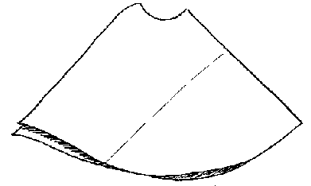
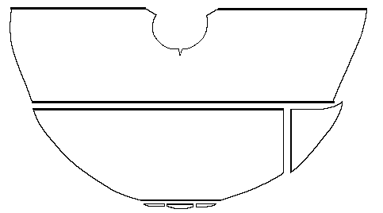

The outermost garment found was a protective mantle or cloak made of a red-brown woolen twill.
The Cloak is semi-circular, with a round opening for the head, and is sewn together on the right shoulder. It is comprised of two whole loomwidths, worn as though bias-cut. The lower "loomwidth" is sewn along a single seam, connecting the selvage edges. There is one section in the back, where an additional piece has been used to lengthen the lower piece. During the 1979-81 conservation it was found that the arc of the semicircle was incomplete, lacking a 45 cm (17.7") long section along the hem. The pieces making up this section were eventually found in the 1936 version of the hood. There is a roughly 1 cm (.4") hem. The long side-opening edge was found to be finished, even though it was also a selvage edge. The right shoulder "corners" were sewn together in a 3 cm (1.2") long seam, which was shown during the reconstruction to have been originally a 10 cm (4") seam. During the 1936 reconstruction, this seam had been covered by a 13 x 8 cm (5.1" x 3.15") rectangle of red cloth (cut as to form a "V"), which was applied with its reverse side out. This piece was eventually moved to the Hood. On the left shoulder is a 5 cm (2") Dart. The Cloak is very well tailored. The "back" is slightly longer than the front, which causes it to drape elegantly and makes it more comfortable to wear.

Line drawing of the cloak, based on one by E. Lundwall. Bold lines indicate selvages edges. Otherwise arrows indicate direction of weave.Go to Cloak Page; Bocksten Bog Site Page
Some Clothing of the Middle Ages, by I. Marc Carlson, Copyright 1996 This code is given for the free exchange of information, provided the Author's Name is included in all future revisions, and no money change hands-